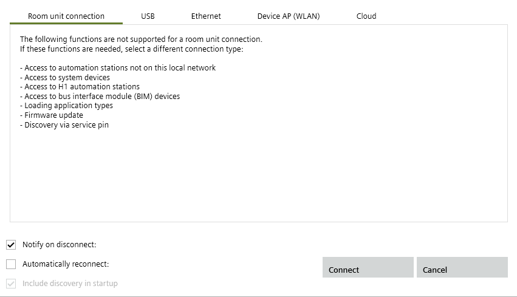

直接连接到房间操作员单元
由定义在中的结构名称组成的用户名称
Connect to a room operator unit
- A USB port is configured on the laptop.
- A USB cable is available (type A plug on one end and type B on the other).
- The QMX3 room operator unit is wired to the device via KNX PL-Link.
- Plug in the USB cable from the commissioning laptop into the USB socket on the OCI702 service interface.
- Plug a cable into the KNX PL-Link socket on the OCI702 service interface.
- Connect the KNX PL-Link cable from the OCI702 service interface to the QMX3 room unit.
- In the Common toolbar, select the arrow beside the Connect
 button.
button. - Select the Room unit connection tab.

- Click Connect.
- The connection is made to device through the room operator unit.
- Select Startup > Configure and download.
The device can now be discovered.